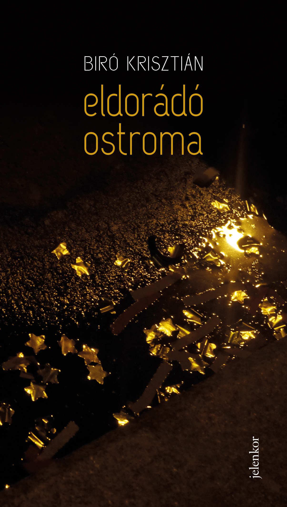

Eldorádó ostroma
Erre a munkámra vagyok a legbüszkébb. Nagyjából hét éven keresztül dolgoztam az első verseskötetem anyagán, és 2020 őszén (a koronavírus miatt elmaradt Könyvhétre) jelent meg a Jelenkor Kiadó gondozásában. A könyv felkerült a Magyar Narancs Minimum tízenegyes! című listájára, emellett a Horváth Péter Irodalmi Ösztöndíj és az Írók Boltja Könyvösztöndíj tízes listájára is.